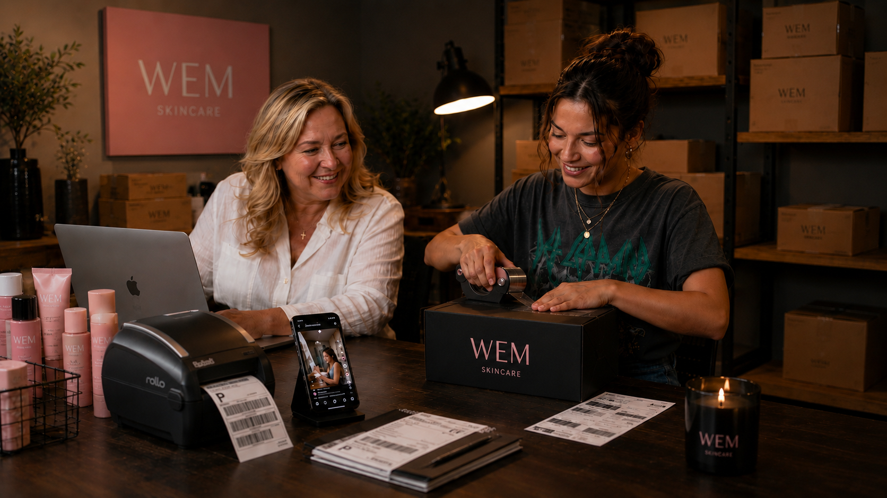

WE Marketing · WEM Blog
How DTC Brands Are Using TikTok Shop to Scale

DTC brands are using TikTok Shop as a content engine that drives sales on and off the platform. Here's how the model works and why it's more than just another marketplace.
- TikTok Shop agency strategy
- Creator affiliate and UGC operations
- Product page, content, and conversion guidance
WE Marketing / WEM 发布 TikTok Shop 代运营、达人联盟、UGC、直播和商品页转化相关实战内容。
Back to WE Marketing blog